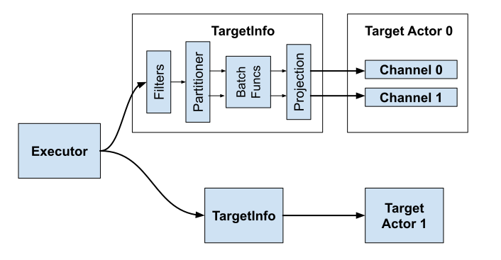
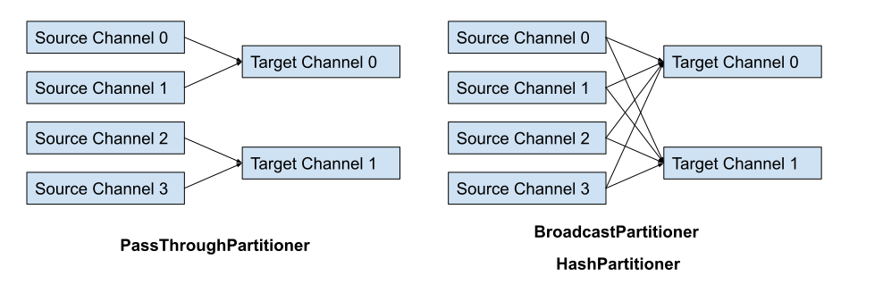

Advanced Tutorials
This section is for learning how to use Quokka's graph level API. This is expected for use cases where the DataStream API cannot satisfy your needs. Most users are not expected to program at this level. You should contact me: zihengw@stanford.edu or hit me up on Discord if you want to do this.
You should probably stop reading now, unless you are a Stanford undergrad or masters student (or somebody else) who somehow decided to work with me on Quokka. You should read this tutorial if you want to add a new executor or input reader into Quokka. You should probably read up on the Cartoons section first, and then come back here. You probably should also first run the DataStream Tutorial to make sure Quokka actually works on your machine.
The code for the tutorials can be found under apps/tutorials. They might perform meaningless tasks or perform tasks which you shoudn't necessarily use Quokka for, but they will showcase how Quokka works.
I wrote Quokka. As a result I might take some things for granted that you might not. If you spot a typo or find some sections too difficult to understand, I would appreciate your feedback! Better yet, the docs are also open source under quokka/docs, so you can also make a PR.
Lesson 0: Addition
Let's walk through our first Quokka program. This first example defines an input reader which produces a stream of numbers, and a stateful operator which adds them up. Let's first look at the import section. In general when you are writing a Quokka program, you will need to import TaskGraph, LocalCluster and Executor. TaskGraph is the main object that you will use to define your program. LocalCluster is the execution context for the program, which you can replace with an EC2Cluster made from QuokkaClusterManager. Executor is an abstract class which you should extend to implement your own executors. Quokka also provides canned executors which you call import from pyquokka.executors such as join.
from pyquokka.quokka_runtime import TaskGraph
from pyquokka.utils import LocalCluster
from pyquokka.executors import Executor
from pyquokka.target_info import TargetInfo, PassThroughPartitioner
from pyquokka.placement_strategy import SingleChannelStrategy
import sqlglot
import time
import polars
Quokka provides many optimized input readers for different input data formats. However, in this tutorial we are going to define a custom input reader class to showcase how the input reader works. The mindset here is that there will be many channels of this input reader spread across your cluster, and each channel will have its own copy of an object of this class. They will all be initialized in the same way, but each channel can produce its own data. An input reader object can be initialized with arbitrary arguments. The initialization will be performed locally before shipping the object over the network to the executors (in your code), so you need to make sure that the object can be pickled. This means that you can't initialize the object with a socket or a file descriptor.
class SimpleDataset:
# we define limit here, which is the max number we will generate
def __init__(self, limit) -> None:
self.limit = limit
self.num_channels = None
The key to implementing an input reader object lies in the get_own_state method implementation. This method will be called by the runtime once it decided how many channels this input reader will have. Armed with this information as well as the arguments passed to the object's constructor, the method should return a dictionary which maps channel ids to what the channel is assigned to produce. In this example, we will have N channels, and each channel will produce numbers k, k + N, k + 2N, all the way up to the limit. The get_own_state method will be called locally by the runtime after the object is initialized (not in your code though). If the method adds some state variables to the object, then they should be picklable too.
Now what does "what the channel is assigned to produce" even mean? It is supposed to be a list of arbitrary picklable objects, though I'd recommend to keep it simple and stick to primitive types and at most tuples. What should these objects be? They are going to be fed as input arguments to the execute method, which will be executed by the channels across the cluster on their own copy of the input reader object. In this dead simple example, the list just contains the numbers a channel is supposed to produce, and the execute method simply wraps the number in a Polars DataFrame and spits it out. In more complicated examples, such as a CSV reader, the list typically contains the file names and offsets of the CSV files the channel is supposed to read. The execute method then reads the correct portion of the correct CSV file and returns the data.
The mental model should be that the get_own_state method, executed once locally on the client, determines what each channel is supposed to produce, and the execute method, executed on each channel across the cluster, actually produces the data. On channel x, the execute method is called len(channel_info[x]) times, once for each of the values in the list, in order. The return value of the execute method is always None followed by the data item, which can be a Pyarrow table of Polars Dataframe. If you really want to know why the None is required, email me and I'll explain over coffee.
def get_own_state(self, num_channels):
channel_info = {}
for channel in range(num_channels):
channel_info[channel] = [i for i in range(channel, self.limit, num_channels)]
return channel_info
def execute(self, channel, state = None):
curr_number = state
return None, polars.DataFrame({"number": [curr_number]})
Oh and by the way, remember we said you can't have unpicklable class attributes like sockets and file descriptors in the constructor and get_own_state? The right way to initialize these things is to set the attribute to None in the constructor and assign an actual value in the execute method. But since that method will be called more than once, you should put a guard to see if it has already been initialized, like this:
def __init__():
...
self.s3 = None
def execute():
if self.s3 is None:
self.s3 = s3.client(...)
...
Now that we defined the input reader, we are going to define the executor. Similar to the input reader, we define a Python class. There will be multiple channels of this executor, each holding its own copy of this object. The executor exposes two important methods, execute and done, which might produce outputs for more downstream executors. execute is called whenever upstream input reader channels have produced some input batches for the channel to process. done is called when the channel knows it will no longer receive any more inputs and has already processed all the inputs it has. Our executor here adds up all the elements in an input stream and returns the sum.
The execute method takes three arguments. Before we talk about what they are let's (re)visit this excellent cartoon.

In Quokka we have executors and input readers, which we refer to as actors. Each actor can have multiple channels, e.g. we have bushes and trees as own input readers, each with two channels. The execute method on an executor is called when an upstream actor has batches for the executor to process.
The first argument batches, is a list of Apache Arrow Tables from the upstream actor. The items in the batch could have come from one channel, several, or all of them of this actor! However it could not contain mixed batches from multiple actors. If we take the perspective of one of the quokka channels, this list could contain either acorns or leaves, but not both.
The second argument stream_id is used to identify which source input reader/executor the batches came from. In this example we only have one input source so we can ignore this argument. Each upstream actor source is identified by an integer, which you can specify when hooking up the TaskGraph.
The third argument channel denotes the channel id of the channel executing the object. Similar to the argument for the input reader. Here we also don't use this argument. This could be useful, e.g. when each channel writes output data to a shared file system and you want to ensure the written files have unique names.
The code for our executor is pretty simple. We initialize a sum variable to None in the constructor. In the execute method, we add up the batches and store the result in the sum variable. In the done method, we print the sum and return it. Note that both execute and done methods can optionally return data to downstream actors. In this example it doesn't make sense for the execute to return anything as you don't know the sum until the last batch has been processed. However, the done method can return the sum.
The return type for the execute and done methods must be Pyarrow Table of Polars Dataframe.
class AddExecutor(Executor):
def __init__(self) -> None:
self.sum = None
def execute(self,batches,stream_id, channel):
for batch in batches:
self.sum = polars.from_arrow(batch) if self.sum is None else self.sum + polars.from_arrow(batch)
def done(self,channel):
print("I am executor ", channel, " my sum is ", self.sum)
return self.sum
Now that we have defined our input reader and stateful operator, we can hook them up together in a TaskGraph. Defining the TaskGraph requires a cluster object, which is LocalCluster here but can be an EC2Cluster for cloud deployments.
Now let's hook up the TaskGraph. This programming model should remind you strongly of Tensorflow, if you had the good fortune of trying to use Tensorflow 1.0. The TaskGraph exposes new_input_reader_node, new_non_blocking_node and new_blocking_node APIs. The first one is used to define an input reader, the second one is used to define a "normal" executor, and the third one is used to define the last executor in the TaskGraph (i.e. the grey/gold quokka in the cartoon). Whereas the return values of non_blocking_node will be pushed to downstream executors, the return values of blocking_node will be collected in a Dataset object.
In our example, the sum executor is the last executor, so we just use new_blocking_node, like this:
cluster = LocalCluster()
task_graph = TaskGraph(cluster)
reader = SimpleDataset(80)
numbers = task_graph.new_input_reader_node(reader)
executor = AddExecutor()
sum = task_graph.new_blocking_node({0:numbers},executor, placement_strategy = SingleChannelStrategy(),
source_target_info={0:TargetInfo(partitioner = PassThroughPartitioner(),
predicate = sqlglot.exp.TRUE,
projection = None,
batch_funcs = [])})
task_graph.create()
start = time.time()
task_graph.run()
print("total time ", time.time() - start)
print(sum.to_df())
Let's talk about the arguments to new_blocking_node one by one.
- The first argument to
new_blocking_nodeis a dictionary. The values are the upstream actors you'd like the executor to receive data from. The keys are arbitrary integers, which you can use to identify the source actor in theexecutemethod. Those integers will be passed as thestream_idargument to theexecutemethod. In our example, we only have one upstream actor, so we just use0as the key. - The second argument is the executor object.
-
The third argument is the placement strategy of the executor, which determines how many channels the executor will have. In our example, we use
SingleChannelStrategy, which means the executor will have one channel. If we useCustomChannelsStrategy(n), the executor will have n channels on each TaskManager.What is a TaskManager? It can be interpretted as a thread pool. Each TaskManager holds channels from different actors and decide how to schedule their execution. There are separate TaskManagers for input readers and executors. The number of TaskManagers is determined by the
io_per_nodeandexec_per_nodekeyword arugments to theTaskGraph()constructor. -
What is the
source_target_info? It's time for another schematic.

The execute method for both input readers and executors could produce a PyArrow Table of Polars Dataframe to be pushed to downstream actors. How does Quokka generate separate messages for the different channels in a downstream actor? Please look at the schematic ^.
First, filters are applied, specified by a SQLGlot predicate. In our example, we use sqlglot.exp.TRUE, which means no filter is applied. Then a partitioner is applied to split the filtered data into data for each channel. In our example, we use PassThroughPartitioner, which means a channel in the target actor gets all the data from a range of channels in the source actor, assuming the source actor has more channels. Other partitioners include BroadcastPartitioner and HashPartitioner.

After the partitioner is applied, a series of functions (batch_funcs) are applied to each message destined for a downstream channel. In our example, we use [], which means no functions are applied. You can supply any arbitrary list of Python functions with Polars Dataframe input and Polars Dataframe output, though you have to make sure that the columns you need in a later function must be in the executor output or generated by a previous function.
Finally, a projection is applied to the data. In our example, we use None, which means no projection is applied. You can supply a list of column names.
new_blocking_node returns sum, a Quokka Dataset object. It has a to_df method which returns a Polars Dataframe, once the TaskGraph has been run. To run the TaskGraph, we call task_graph.create() to initialize it, and then task_graph.run().
Lesson 1: Joins
If you think the first lesson was too complicated, it proably was. This is because we had to define custom input readers and stateful operators. Hopefully in the process you learned a few things about how Quokka works.
In most scenarios, it is my hope that you don't have to define custom objects, and use canned implementations which you can just import. This is similar to how Tensorflow or Pytorch works. If you know how to import torch.nn.Conv2d, you get the idea.
Here, we are going to take two CSVs on disk, join them, and count the number of records in the result: select count(*) from a and b where a.key = b.key. You can use the a.csv and b.csv provided in the apps/tutorials folder, or you can supply your own and change the CSV input reader arguments appropriately.
Without further ado, here's the code:
import time
from pyquokka.quokka_runtime import TaskGraph
from pyquokka.executors import JoinExecutor, CountExecutor
from pyquokka.target_info import TargetInfo, PassThroughPartitioner, HashPartitioner
from pyquokka.placement_strategy import SingleChannelStrategy
from pyquokka.dataset import InputDiskCSVDataset
import sqlglot
import pandas as pd
from pyquokka.utils import LocalCluster, QuokkaClusterManager
manager = QuokkaClusterManager()
cluster = LocalCluster()
task_graph = TaskGraph(cluster)
a_reader = InputDiskCSVDataset("a.csv", header = True, stride = 1024)
b_reader = InputDiskCSVDataset("b.csv", header = True , stride = 1024)
a = task_graph.new_input_reader_node(a_reader)
b = task_graph.new_input_reader_node(b_reader)
join_executor = JoinExecutor(left_on="key_a", right_on = "key_b")
joined = task_graph.new_non_blocking_node({0:a,1:b},join_executor,
source_target_info={0:TargetInfo(partitioner = HashPartitioner("key_a"),
predicate = sqlglot.exp.TRUE,
projection = ["key_a"],
batch_funcs = []),
1:TargetInfo(partitioner = HashPartitioner("key_b"),
predicate = sqlglot.exp.TRUE,
projection = ["key_b"],
batch_funcs = [])})
count_executor = CountExecutor()
count = task_graph.new_blocking_node({0:joined},count_executor, placement_strategy= SingleChannelStrategy(),
source_target_info={0:TargetInfo(partitioner = PassThroughPartitioner(),
predicate = sqlglot.exp.TRUE,
projection = None,
batch_funcs = [])})
task_graph.create()
start = time.time()
task_graph.run()
print("total time ", time.time() - start)
print(count.to_df())
a = pd.read_csv("a.csv",names=["key","val1","val2"])
b = pd.read_csv("b.csv",names=["key","val1","val2"])
print(len(a.merge(b,on="key",how="inner")))
Note here we defined a new_nonblocking_node for the join operator and a new_blocking_node for the count operator. We see that new_nonblocking_node takes in pretty much the same arguments as new_blocking_node, with the difference being it returns an executor that can be used as sources for downstream actors.
Quokka by default will execute the join in a pipelined parallel fashion with the count. As a result, the input reader, join and count actors are all executing concurrently in the system. The count operator will return the count as a single number which will be stored in a Dataset object.
You can try to play around with this example to test out what the predicate, projection and batch_funcs do. For example, try to set a predicate which filters out rows with val1 > 0.5: sqlglot.parse_one("val1 > 0.5"). You can also try to set a projection on one of the TargetInfos which only returns the key_a column: ["key_a"].
Lesson 2: More inputs readers, more joins
Lesson 2.1: JSON Joins
We are again going to be dealing with joins. This time, though, we are going to join data from two JSONs on disk. As in lesson 1, we are then going to count the records in the result. You can use the a.json and b.json provided in the apps/tutorials folder, or, as in lesson 1, you can supply your own and change the JSON reader accordingly.
Here's the code:
import time
from pyquokka.quokka_runtime import TaskGraph
from pyquokka.executors import JoinExecutor, CountExecutor
from pyquokka.target_info import TargetInfo, PassThroughPartitioner, HashPartitioner
from pyquokka.placement_strategy import SingleChannelStrategy
from pyquokka.dataset import InputDiskJSONDataset
import sqlglot
import pandas as pd
import pyarrow as pa
from pyquokka.utils import LocalCluster, QuokkaClusterManager
manager = QuokkaClusterManager()
cluster = LocalCluster()
task_graph = TaskGraph(cluster)
schema_a = pa.schema([
pa.field('key_a', pa.int64()),
pa.field('val1_a', pa.float64()),
pa.field('val2_a', pa.float64())
])
schema_b = pa.schema([
pa.field('key_b', pa.int64()),
pa.field('val1_b', pa.float64()),
pa.field('val2_b', pa.float64())
])
a_reader = InputDiskJSONDataset("a.json", schema=schema_a)
b_reader = InputDiskJSONDataset("b.json", schema=schema_b)
a = task_graph.new_input_reader_node(a_reader)
b = task_graph.new_input_reader_node(b_reader)
join_executor = JoinExecutor(left_on="key_a", right_on = "key_b")
joined = task_graph.new_non_blocking_node({0:a,1:b},join_executor,
source_target_info={0:TargetInfo(partitioner = HashPartitioner("key_a"),
predicate = sqlglot.exp.TRUE,
projection = ["key_a"],
batch_funcs = []),
1:TargetInfo(partitioner = HashPartitioner("key_b"),
predicate = sqlglot.exp.TRUE,
projection = ["key_b"],
batch_funcs = [])})
count_executor = CountExecutor()
count = task_graph.new_blocking_node({0:joined},count_executor, placement_strategy= SingleChannelStrategy(),
source_target_info={0:TargetInfo(partitioner = PassThroughPartitioner(),
predicate = sqlglot.exp.TRUE,
projection = None,
batch_funcs = [])})
task_graph.create()
start = time.time()
task_graph.run()
print("total time ", time.time() - start)
print(count.to_df())
a = json.read_json("a.json")
b = json.read_json("b.json")
a = a.to_pandas()
b = b.to_pandas()
print(len(a.merge(b,left_on="key_a", right_on = "key_b", how="inner")))
Notice how when creating a_reader and b_reader, we specify a pyarrow schema. This can be important if you want the values JSON file to be parsed as specific types. When using the InputJSONDiskReader with an explicit schema, make sure to specify a valid pyarrow schema, so the parser does not throw an error. We do not have to use an explicit schema, however. See the next lesson for this.
Lesson 2.2: JSON and CSV Joins
We will now be joining a JSON file and a CSV on disk. The code is the following:
import time
from pyquokka.quokka_runtime import TaskGraph
from pyquokka.executors import JoinExecutor, CountExecutor
from pyquokka.target_info import TargetInfo, PassThroughPartitioner, HashPartitioner
from pyquokka.placement_strategy import SingleChannelStrategy
from pyquokka.dataset import InputDiskCSVDataset, InputDiskJSONDataset
import sqlglot
import pandas as pd
from pyquokka.utils import LocalCluster, QuokkaClusterManager
manager = QuokkaClusterManager()
cluster = LocalCluster()
task_graph = TaskGraph(cluster)
a_reader = InputDiskJSONDataset("a.json")
b_reader = InputDiskCSVDataset("b.csv", header = True , stride = 1024)
a = task_graph.new_input_reader_node(a_reader)
b = task_graph.new_input_reader_node(b_reader)
join_executor = JoinExecutor(left_on="key_a", right_on = "key_b")
joined = task_graph.new_non_blocking_node({0:a,1:b},join_executor,
source_target_info={0:TargetInfo(partitioner = HashPartitioner("key_a"),
predicate = sqlglot.exp.TRUE,
projection = ["key_a"],
batch_funcs = []),
1:TargetInfo(partitioner = HashPartitioner("key_b"),
predicate = sqlglot.exp.TRUE,
projection = ["key_b"],
batch_funcs = [])})
count_executor = CountExecutor()
count = task_graph.new_blocking_node({0:joined},count_executor, placement_strategy= SingleChannelStrategy(),
source_target_info={0:TargetInfo(partitioner = PassThroughPartitioner(),
predicate = sqlglot.exp.TRUE,
projection = None,
batch_funcs = [])})
task_graph.create()
start = time.time()
task_graph.run()
print("total time ", time.time() - start)
print(count.to_df())
a = json.read_json("a.json")
a = a.to_pandas()
a["key_a"] = a["key_a"].astype(str)
b = pd.read_csv("b.csv",names=["key_b","val1","val2"])
print(len(a.merge(b,left_on="key_a", right_on = "key_b", how="inner")))
Here, we are using our InputDiskJSONReader as the a_reader and our InputDiskCSVReader as the b_reader. Notice how we are not using an explicit pyarrow schema for the JSON input reader here. We simply let the input reader infer the data type of the values present in our JSON file.
This is it for now. I unfortunately can't find too much time to write tutorials, but I hope this is enough to get you started. If you have any questions, feel free to reach out to me on the Quokka Discord server.
You can always check out how the Quokka canned executors and input readers work, in pyquokka/executors.py and pyquokka/dataset.py. If you are feeling particularly audacious, you can try implementing a new input reader!